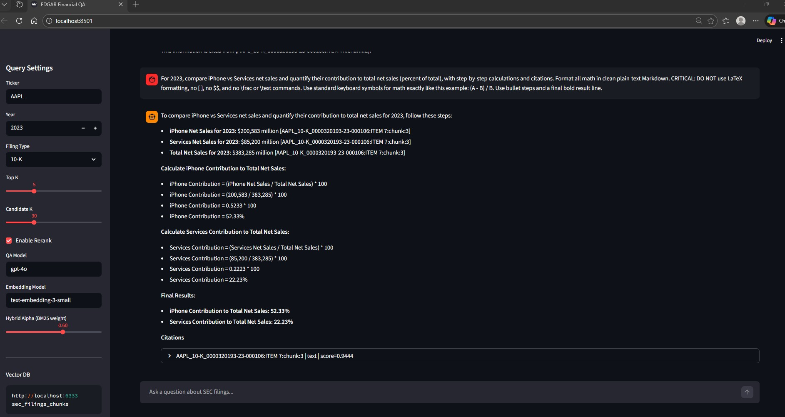
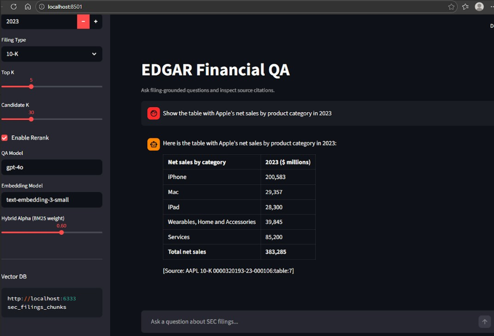

EDGAR RAG: Hybrid BM25 + Qdrant Retrieval for Financial QA
A production-style Retrieval-Augmented Generation pipeline for SEC filings that combines lexical BM25 and dense vector search to answer filing-grounded financial questions with citations.
Project Overview
This project focuses on the hard part of finance RAG: reliable retrieval over long filings and semi-structured tables. It parses EDGAR HTML filings, preserves table structure, builds section-aware chunks, and runs hybrid retrieval using BM25 + Qdrant ANN vectors before passing context to an LLM for grounded answer generation.
Key Features
- Hybrid Retrieval: Score fusion across BM25 lexical ranking and dense semantic vectors from OpenAI embeddings.
- Qdrant Vector Index: Local/remote Qdrant integration for low-latency ANN retrieval with metadata filters by ticker, filing type, and year.
- Table-Aware Strategy: HTML tables are summarized for retrieval while original table HTML is preserved for generation-time reasoning.
- Section-Aware Chunking: Filing text is chunked with overlap and tied to SEC item sections for better citation quality.
- Reranking Layer: Optional reranker combines lexical overlap and numeric overlap signals to prioritize answerable chunks.
- Citation-Backed QA: Model outputs include chunk IDs that map directly to retrieved contexts for traceability.
Technologies Used
- Python: Core pipeline and orchestration.
- OpenAI API: Embeddings and answer generation.
- Qdrant: Vector database for dense retrieval.
- Unstructured: HTML partitioning and table extraction.
- Streamlit + FastAPI: Interactive QA interface and health API.
Challenges & Learnings
- Sparse vs Dense Trade-offs: BM25 catches exact financial terms while dense retrieval improves semantic recall; balancing both materially improved top-k relevance.
- Table Handling: Preserving table HTML prevented information loss common in plain-text flattening for financial statements.
- Metadata Precision: Strict ticker/year/form filtering reduced cross-filing contamination and improved factual precision.
- Evaluation Discipline: Added faithfulness, relevance, and citation-precision checks to make quality measurable and reproducible.
Architecture Diagram
End-to-end system flow: EDGAR ingestion -> parsing/chunking -> BM25 + Qdrant hybrid retrieval -> reranking -> citation-backed LLM answers.
Screenshots
Demo Walkthrough: these three screens show the core EDGAR-RAG value path in order: precise retrieval, financial reasoning, and citation-level auditability.
1) Risk Retrieval Precision: hybrid BM25 + Qdrant retrieval surfaces the exact Risk Factors evidence and returns a cited answer.
2) Calculation Fidelity: the system performs table-grounded financial math, shows step-by-step formulas, and cites supporting chunks.
3) Citation Traceability: metadata-filtered QA (`ticker/year/form`) with auditable context so every claim can be inspected at source.
Setup Instructions
Configure `.env`, start Qdrant, run ingestion/parsing/indexing scripts, then launch the Streamlit app for interactive filing QA. The repository includes CLI modules for each pipeline stage so experiments are reproducible end-to-end.
Source Code
You can view and contribute to the source code on GitHub:
Source Code